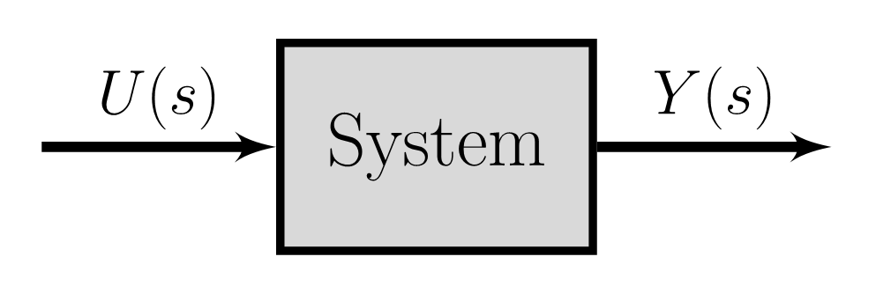
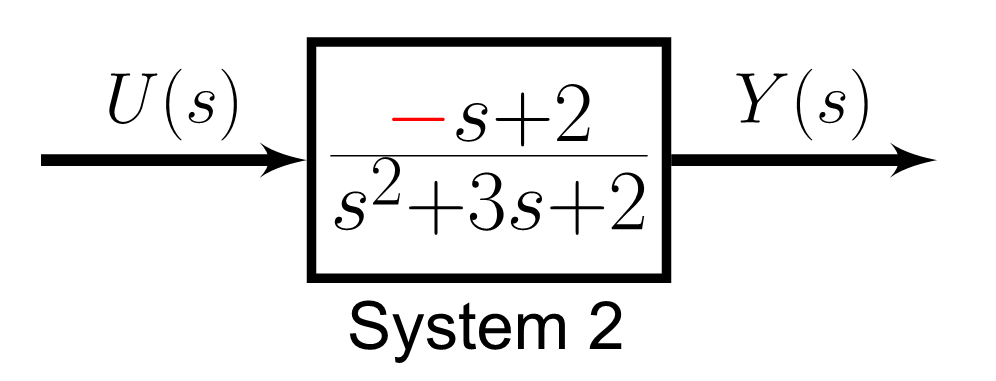
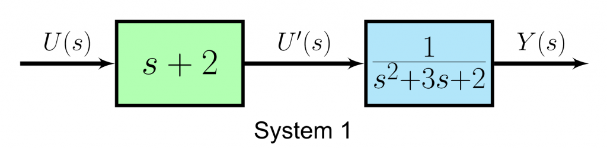
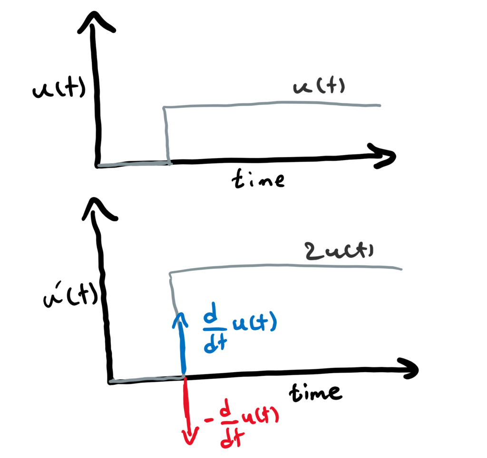
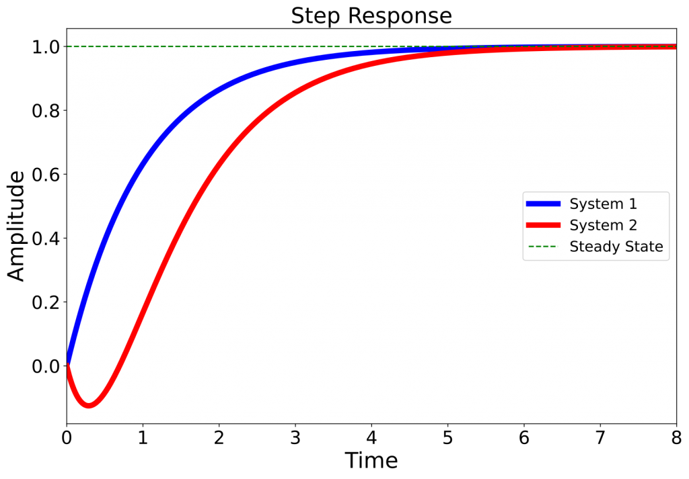

👉 This article is also published on Towards Data Science blog.
Have you ever wondered why when you turn the hot water knob on in the shower, the water will be cold for a few seconds, and then it gets hot or vice versa?
In this article, we are going to answer this question by touching upon two concepts, namely the Minimum Phase (MP) systems, and Transfer Functions.
Introduction
Let me first elaborate on the question. The phenomenon I mentioned in the question is particularly noticeable in climates, where water supplies are different than the ambient temperature. I lived in both extreme climates. In a hot country where the temperature reaches 45° Celcius (113° Fahrenheit) in summer if you turn the cold water knob, the water supply is first super hot, and then after some time, it gets colder. On the other hand, I’m currently living in a city wherein winter, the temperature reaches -20° Celcius (-13° Fahrenheit), and even less. If you turn the hot water knob, it takes a few seconds for the water supply to get hot. Both phenomena follow a similar behavior from a control engineering perspective.

This article will answer this question from a control system theory perspective. The short answer is that because the water supply system in the shower is a non-minimum phase (NMP) system.
To get a better understanding of how an NMP system behaves, let’s work on an example. We are going to need a mathematical model for our system. Since NMP can be better understood using the transfer function model, we need to be aware of this concept. However because this representation is less common than other mathematical models like differential equations, let’s first briefly go over what the transfer function is and how a model can be represented in this way. If you are already aware of what a transfer function is, then feel free to jump to the example.
Transfer Function
There are several ways to represent a physical system’s mathematical model, such as differential equations, state-space representation, and transfer function. Most commonly, we use time-based functions to model our physical systems using the first two approaches mentioned (just to be clear we can write differential equations of a model in frequency domain but it’s less common in mathematical modeling of physical systems). However, a transfer function provides us with another way of looking at a system by analyzing the system in the frequency domain. Now, let’s see what a transfer function is!
What is the Transfer Function?
A transfer function model describes an input-output relationship of a system using a ratio of polynomials. So, an input signal is given to a system to produce a controlled output (aka response). This type of modeling is different than using differential equations and state-space representations where the model dynamics is available.
💡 A transfer function is another way of viewing a dynamical system but in the frequency domain by analyzing the system response for a given input signal.
The transfer function of a control system is the ratio of the Laplace transforms (\mathscr{L}\{\}) of output signals over the Laplace transform of the input signal. In a nutshell, instead of analyzing a model in the time-domain using time-based differential equations, the goal here is to analyze the model in the frequency-domain using a transformation.

H(s)=\frac{L\{u(t)\}}{L\{y(t)\}}=\frac{U(s)}{Y(s)}
So, let’s say we have a system with u(t) and y(t) as our input and output signals. The transfer function can be calculated as shown above.
The roots of the numerator polynomial are called the model zeros, and the roots of the denominator polynomials are called the model poles. The zeros affect the input to a system, and the poles affect the system response and its stability. For zero-pole analysis, we should use the *s*−plane that is a complex plane on which Laplace transforms are graphed (see MATLAB 2020).
In this post, we are only interested in the initial response of the system in order to answer the question of why the shower first gets cold before it gets hot? Since the initial system response is closely related to system zeros as noted earlier, therefore, we will not talk about the poles (perhaps that can be a topic for another article).
What are Non-Minimum Phase Systems?
Now that we are familiar with an NMP system, let’s define the system formally:
👉 Non-minimum Phase systems are causal and stable systems whose inverses are causal but unstable (see Wikipedia 2020-08-08).
Having a delay in our system or a model zero on the right half of the *s*−plane (aka Right-Half Plane or RHP) may lead to a non-minimum phase system.
Note that there is only one minimum phase system for a given magnitude response, but there is an infinite number of NMP systems. This is the reason why we do not hear a term like the maximum phase system. See Hoagg and Bernstein (2007) for more detail about non-minimum phase systems with mathematical description.
Case Study
Now that we are familiar with Transfer Functions, let’s see how a non-minimum phase system will look like and answer why we water will first get colder before it gets hot!
Below are two systems that have the same poles but with different zeros. System 1 has a zero at s=-2, whereas System 2 has a zero at s=2.


Let’s separate poles and zeros of System 1 for our analysis. As noted earlier, you can think of the zero as a modified input (let’s call it U'(s)). As noted earlier, we are interested in the model zeros in this article, so we will focus on the green block.

Let’s see how the modified input U'(s) of System 1 is in the time-domain by applying an inverse \mathscr{L}-transform
\begin{aligned} \frac{U'(s)}{U(s)} &= s + 2 \\ \longrightarrow U'(s) &= (s + 2) U(s) \\ \mathscr{L}^{-1} \{ U'(s) \} &= \mathscr{L}^{-1} \{ (s + 2) U(s) \} \\ \longrightarrow \: u'(t) &= \frac{d}{dt}u(t) + 2u(t) \end{aligned}Following the same procedure for System 2, the modified input for System 2 will be
u'_{\text{System 2}}(t)={\color{red} −}\frac{d}{dt} u(t) +2u(t)
So, the only difference is in that negative sign. Let’s plot the input and the modified input signals for both systems and see how both differ.
Let’s use the unit step as our input signal u(t) (the gray function on the top). Since the input signal is a unit step, the output y(t) is referred to as the step response. The modified input u'(t) is illustrated bellow that is the summation of 2u(t) and a derivative of u(t). The derivative component of u'(t) is blue for System 1 and red for System 2.

The negative derivative of u(t) in System 2 causes the step response of System 2 to go first towards the opposite direction of the expected response (steady-state value) before moving towards the expected response (the red curve). This is in contrast to the step response of System 1 (blue curve) that does not have this undershoot at the beginning. For a nice illustration of what non-minimum phase systems are, you can check (MATLAB 2019).

So, the next question is what to do when we have a non-minimum phase system?
The solution is to just wait ⏳. We have to wait until the undershoot is over. We can also design a controller/compensator for such systems. However, designing a controller is harder for NMP systems for several reasons like the risk of the system getting unstable or having a slower response.
Now, let’s get back to our question in the beginning. Why the water in the shower is cold first when you open the hot water supply before getting hot?
The answer is that when you open the hot water supply in showers, the system experiences an undershoot since it’s a non-minimum phase before the water gets hot. In this case, it’s better to wait a few seconds so that the system recovers (from the undershoot). You should not change the direction or open the other knob since that will end up in a colder shower in the long-run!
Another example that is usually used in Control System books is the aircraft altitude change in response to elevator deflection. In this case, when the aircraft tries to increases its altitude using elevator, the altitude slightly decreases due to the aircraft tailing down (resulting in a downward aerodynamic force) before it increases its altitude. This example is available with the mathematical model in Chapter 6 of the book “Feedback Control of Dynamic Systems” by Franklin (7th edition) (see Franklin, Powell, and Emami-Naeini 2002).
Conclusion
In this article, we learned about what a non-minimum phase system is and why such a system first experiences response in the wrong direction (you turn the hot water knob, and the water is first cold!). We also talked about the transfer function and how it can be useful in analyzing systems.
References
Citation
@online{alizadeh2020,
author = {Essi Alizadeh},
editor = {},
title = {A {Guide} to {Non-Minimum} {Phase} {Systems}},
date = {2020-10-31},
url = {https://ealizadeh.com/blog/non-minimum-phase-systems},
langid = {en}
}